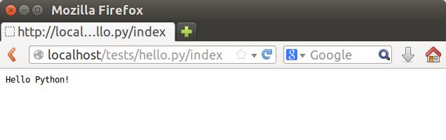
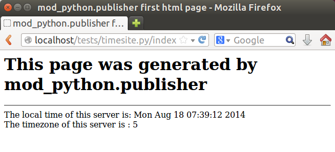
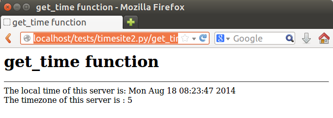
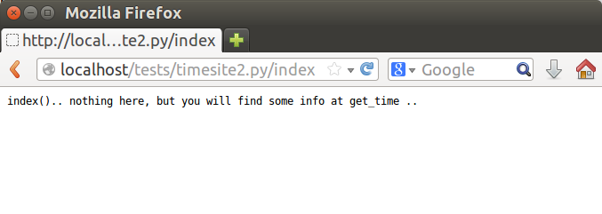
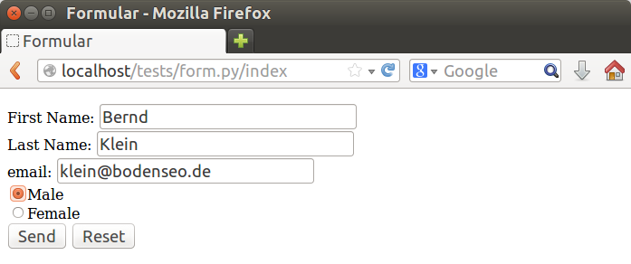
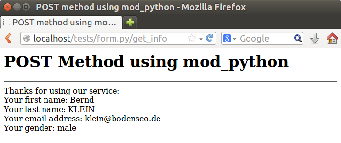

Creating dynamic websites with Python with mod_python and WSGI
Introduction
Please notice:Work on this topic is under process. (August 2014)
mod_python is an Apache HTTP Server module. It's purpose is to integrate Python programming with the Apache web server, or in other words a Python language binding for the Apache HTTP Server. The official website of mod_python says, that it possible to write "with mod_python web-based applications in Python that run many times faster than traditional CGI and will have access to advanced features such as ability to retain database connections and other data between hits and access to Apache internals." mod_python has been pronounced dead some years ago. So it didn't look to be a good idea to use it for new projects. It never died, it was only "sleeping". It came to life again in 2013!
Python and mod_python
If we want to use Python on am Apache web server, we need the mod_python module for Apache. This module provides a Python language binding so that we can integrate Python. It's a more efficient approach than using CGI, because CGI will start a new Python process for every request.Mod_python consists of two components: The dynamically loadable module mod_python.so for Apache and the Python package mod_python. If you are using Debian or Ubuntu Linux, it's satisfying to install the package libapache2-mod-python for this purpose, assuming apache2 is already installed:
sudo apt-get install libapache2-mod-pythonIf apache2 has to be installed as well, do the following installation first:
sudo apt-get install apache2You have to add the following lines into /etc/apache2/sites-enabled/000-default:
AddHandler mod_python .py PythonHandler mod_python.publisher PythonDebug OnIt may look like this:
sudo /etc/init.d/apache2 restart
A Simple Dynamic Page with mod_python
We will create a subdirectory "tests" in the documents root of the Apache server. In case of Debian and Ubuntu, this will be /var/www/html/. We save the following Python program as "hello.py" in the previously created subdirectory:
def index():
return "Hello Python!"
We have to start a browser and go to the location "localhost/tests/hello.py/index". It works with "localhost/tests/hello.py" as well. We get the following output in the browser window:

Another more "Useful" webpage
We save the following website as timesite.py. It will print out the current date and time, as well as the timezone:
import time
def index():
html = """
<html><head>
<title>mod_python.publisher first html page</title>
</head>
<body>
<h1>This page was generated by mod_python.publisher</h1><hr>
The local time of this server is: %s
<br>The timezone of this server is : %s
</body>
</html>
""" % (time.ctime(time.time()), time.timezone/3600)
return html
</pre>
We get the following output:

Another Page Name
So far we used index as the default website name. We can also define other functions and by doing so create websites with other names. We write the get_time function in following example and modify the index function:
import time
def index():
return "index().. nothing here, but you will find some info at get_time .."
def get_time():
html = """
<html><head>
<title>get_time function</title>
</head>
<body>
<h1>get_time function</h1>
<hr>
The local time of this server is: %s <br>
The timezone of this server is : %s <br>
</body>
</html>""" % (time.ctime(time.time()), time.timezone/3600)
return html
Calling the location "http://localhost/tests/timesite2.py/get_time", returns the following output:

Using the address "http://localhost/tests/timesite2.py/index", supplies this:

Using Forms
HTML forms are used to pass data to a server. We can do this with mod_python as well. The following html form inside our Python program "form.py" contains fields for the first name, last name email address and radio buttons for the gender:def index(): return """ <html><head> <title>Formular</title> </head> <body> <FORM value="form" action="get_info" method="post"> <P> <LABEL for="firstname">First Name: </LABEL> <INPUT type="text" name="firstname"><BR> <LABEL for="lastname">Last Name: </LABEL> <INPUT type="text" name="lastname"><BR> <LABEL for="email">email: </LABEL> <INPUT type="text" name="email"><BR> <INPUT type="radio" name="gender" value="Male">Male<BR> <INPUT type="radio" name="gender" value="Female">Female<BR> <INPUT type="submit" value="Send"> <INPUT type="reset"> </P> </FORM> </body> </html> """ def get_info(req): info = req.form first = info['firstname'] last = info['lastname'] email = info['email'] gender = info['gender'] return """ <html><head> <title>POST method using mod_python</title> </head> <body> <h1>POST Method using mod_python</h1> <hr> Thanks for using our service:<br> Your first name: %s <br> Your last name: %s <br> Your email address: %s <br> Your gender: %s <br> </body> </html> """ %(first, last.upper(), email, gender.lower())Calling the above program with the URL "http://localhost/tests/form.py/index" gives us the following entry form:

To see the result page, i.e. the result of the function get_info, we have to push the "send" button:
